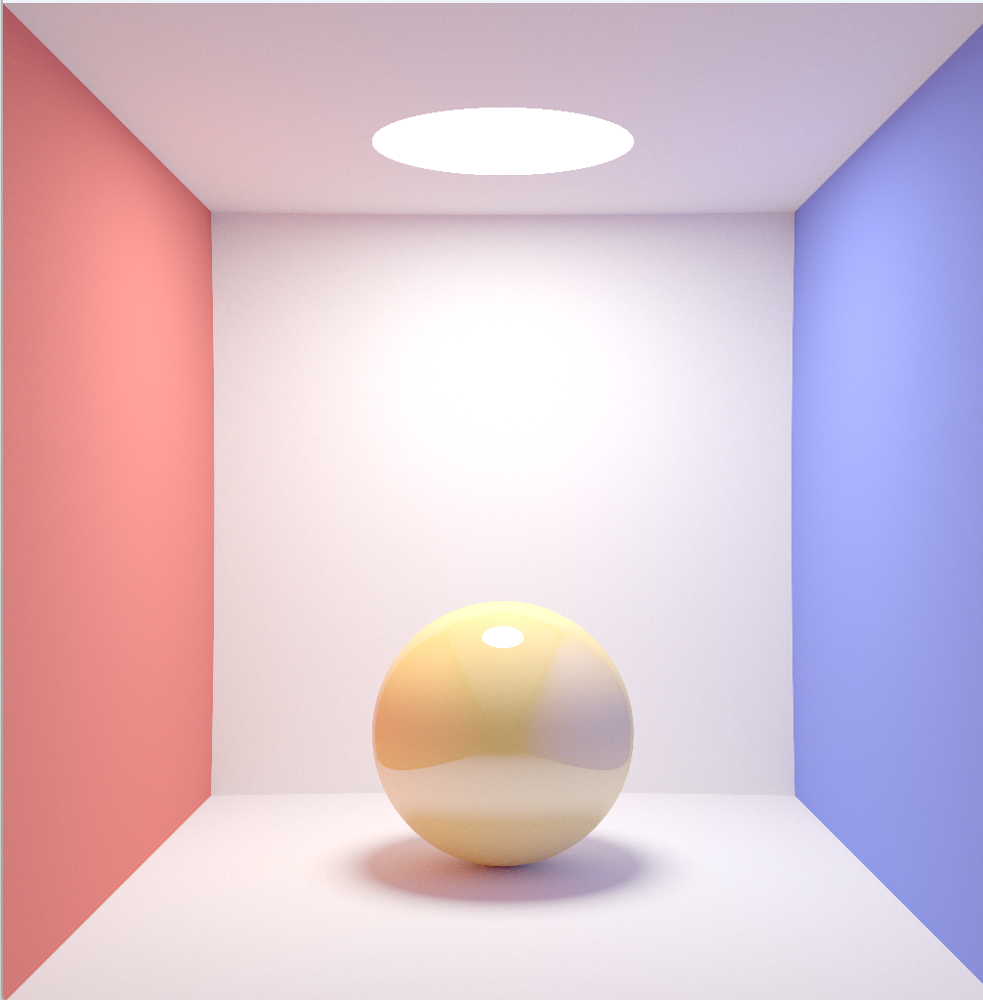

Path Tracing Using Rust and WGPU
So, I survived the final exams
It has been a long time since my last blog, which can be explained by the fact that I've been preparing for my final exams. One thing I learned from the last two weeks is that you really should not skip 4 full-semester courses and buy the textbooks half a week before the exams(actually I only bought 3 of them). Another thing I've learned is that if you are determined to do so, you really can manage to do it LOL.
Anyway, now that I have finished the exams, I am able to do something more interesting. This semester I was "forced" to do an OS assignment in Rust, and I had little interest in neither the language and the course back then. However, I came across this interesting graphics API, wgpu, when exploring GitHub a few months ago, so I decided to spend a day to write a path tracer according to the Learn WGPU tutorial.
A Simple Path Tracer
If you have not yet written a path tracer before, smallpt is probably the best starting point for you to run a path tracer on your own PC to see what it does.
In smallpt, the scene being rendered is a modified version of the Cornell Box. The walls and the light are all spheres(big enough to appear flat), so the implementation can only focus on how to solve for the intersection of the ray and a sphere. I used 7 spheres to make another modified version of the Cornell Box with a unified material which behaves like either a Lambertian diffuse material or a perfectly-reflective material according to a constant possibility, mimicking the clean coat material.
Because there are only less than 10 spheres in the scene, I did not write a BVH or something like that to accelerate the intersection test. A linear search would be good.
The tracing logic is in the fragment shader, which is in the same file as the vertex shader since wgsl(the shading language supported by WebGPU) supports shader code from different stages in the same file.
1 | fn intersect(ray: Ray) -> Hit |
More details can be found in my repo here.
The final result looks like this:

Personally I consider it more exhausting to implement your little experimental renderers using wgpu in Rust than moderngl in python, which I believe can be attributed to the fact that I'm not yet familiar with Rust. However, both of them are concise enough compared to what you would have to write when using C++.
Recommended Material
- smallpt, which is a must-read for anyone taking the CG course in my university
- Learn WGPU
For the following one week or two, I would try to implement SSAO and SSDO(and probably other screen-space global illumination methods), which can be regarded as a sequel to the Ray Marching series.
Thanks for reading this blog and have a great day.